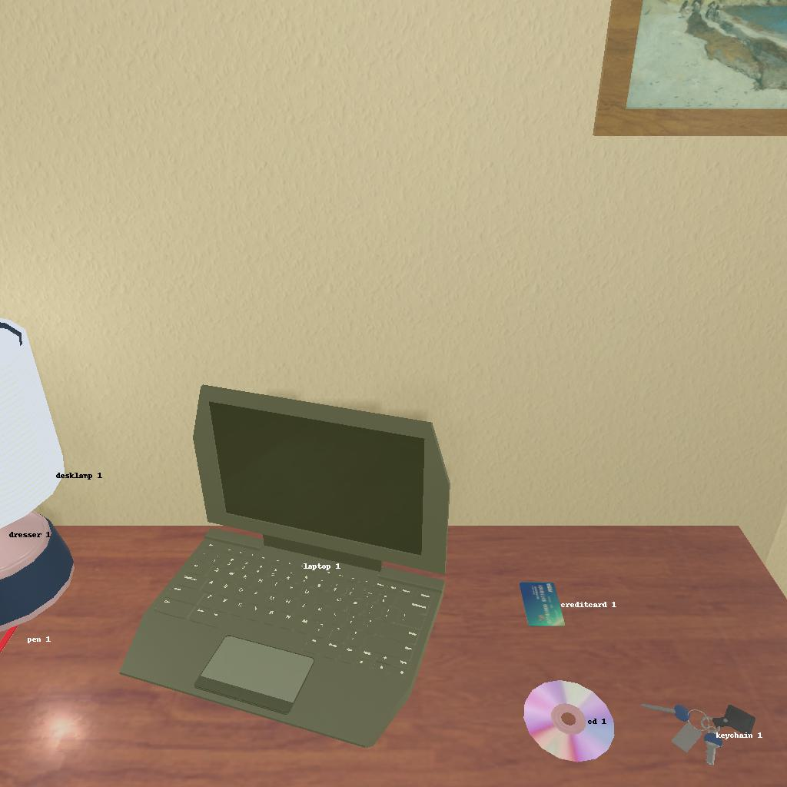

---------------------------------------------------------task: 1---------------------------------------------------------
--------------------------------------------------------------------------------------------------------------------------------------------------------------------
--------------------------------------------------------------------------------------------------------------------------------------------------------------------
Step:--------------------------------------------------------------------------9-------------------------------------------------------------------------------
----------------------------------------
VLM Prompt:
Image1:
Image2:
**Instruction**
1. Analyze the provided image to identify all visible household objects, focusing on those relevant to the task description "examine the alarmclock with the desklamp."
2. Use the analysis of the image and the task hint "The agent must find an object of the desired type, locate and turn on a light source with the desired object in-hand." to answer the question: what is the most reasonable action in the choices for the task description "examine the alarmclock with the desklamp"?
4. Decide and write the answer using the template: The answer is: (i): , where i is the real number. If there is no desired object in the image, search every place based on **Initial Observation** to find the object. And if no one is exactly correct, choose a similar answer.
**Initial Observation**
You are in the middle of a room. Looking quickly around you, you can see bed (1), dresser (1), drawer (1-10), garbagecan (1), shelf (1-7)
**Answer Choices**
(1): go to bed 1
(2): go to drawer 2
(3): go to drawer 3
(4): go to drawer 4
(5): go to drawer 5
(6): go to garbagecan 1
(7): go to drawer 6
(8): go to drawer 7
(9): go to drawer 8
(10): go to drawer 9
(11): go to drawer 10
(12): go to shelf 1
(13): go to shelf 2
(14): go to shelf 3
(15): go to shelf 4
(16): go to shelf 5
(17): go to shelf 6
(18): go to shelf 7
(19): take laptop 1 from dresser 1
(20): take cd 1 from dresser 1
(21): take keychain 1 from dresser 1
(22): take creditcard 1 from dresser 1
(23): take pen 1 from dresser 1
(24): use desklamp 1
**Answer**
Let's think step by step by following the instructions.
----------------------------------------
----------------------------------------
Original Response:
The task description is "examine the alarmclock with the desklamp." However, upon analyzing the image, there is no alarm clock visible on the dresser or any other visible area in the image. The task hint suggests we need to find an object of the desired type (alarm clock) and locate and turn on a light source (desklamp) with the desired object in-hand. Since the alarm clock is not in the image, we must search every place based on the Initial Observation to find the object.
Considering the Initial Observation, the most reasonable action to find the alarm clock would be to check the places where it is most likely to be kept, such as on a shelf or in a drawer near the bed. Since the desklamp is already visible on the dresser, we do not need to take any action regarding it at this moment.
Therefore, we can eliminate options (19) to (23) as they do not involve searching for the alarm clock. Option (24) is also unnecessary at this stage since we need to find the alarm clock first before we can examine it with the desklamp.
Among the remaining options, checking the drawers and shelves is the most logical next step to locate the alarm clock. There is no specific indication of which drawer or shelf may contain the alarm clock, so we must select one of them as the most reasonable action.
The answer is: (12): go to shelf 1.
----------------------------------------
----------------------------------------
>>> Refine Original VLM Response and Get Pure Action: go to shelf 1
----------------------------------------
-----------------------------------------------------------------
Running time: 11.799846410751343 seconds
Total Money: 0.49672
-----------------------------------------------------------------
-----------------------------------------------------------------
Text Observation:You arrive at loc 13. On the shelf 1, you see a alarmclock 2, and a mug 1.
-----------------------------------------------------------------
UNSUCCEED